45436, 44300, 24900: Ποιος Είναι ο Επόμενος;#

Ο πίνακας Γυναίκα με Phlox του Albert Gleizes.#
Όταν είχα ακούσει για πρώτη φορά για Random Number Generators (RNGs, Γεννήτριες Τυχαίων Αριθμών) πρέπει να ήμουν στο γυμνάσιο. Τότε, μου είχε φανεί καθʹ όλα φυσιολογικό ένας υπολογιστής, αφού μπορεί να κάνει τόσα φοβερά και τρομερά πράγματα, να μπορεί να παραγάγει που και που και κανέναν τυχαίο αριθμό. Ωστόσο, μεγαλώνοντας, άρχισε να με προβληματίζει υπερβολικά πολύ το εξής: Πώς μπορεί ένα μηχάνημα να βγάζει αριθμούς «από το καπέλο»; Γενικότερα, πώς μπορούμε να παράγουμε τυχαιότητα από ένα μηχάνημα το οποίο, σε γενικές γραμμές, φαίνεται να μπορεί να μας υπακούει με μία χαρακτηριστική άνεση;
Βλέπετε, ένας υπολογιστής είναι μία αιτιοκρατική μηχανή - μιλάμε πάντα για τους συνήθεις υπολογιστές που χρησιμοποιούμε εδώ και χρόνια. Δηλαδή, ένας υπολογιστής, αν καθορίσουμε πλήρως το πρωτόκολλο λειτουργίας του - έναν αλγόριθμο - καθώς και τα δεδομένα εισόδου του, τότε μπορούμε να προβλέψουμε το τι θα μας δώσει. Επομένως, με ίδια είσοδο και χωρίς να έχει υπάρξει κάποια μεταβολή στον τρόπο λειτουργίας του υπολογιστή, θα παίρνουμε διαρκώς το ίδιο αποτέλεσμα. Εδώ γεννάται το εξής ερώτημα: αν μπορούμε, δεδομένης της εισόδου και ενός αλγορίθμου, να καθορίσουμε πλήρως και εκ των προτέρων τη συμπεριφορά ενός υπολογιστή, πώς γίνεται να παράγουμε τυχαίους αριθμούς με τη βοήθεια ενός υπολογιστή;
[Σκεφτείτε το λίγο…]
Η απάντηση είναι απλή και άμεση: δε γίνεται! Ωστόσο, αν αυτό είναι ανέφικτο, τότε τι είναι οι RNGs; Ας πάρουμε, για παράδειγμα, μία γεννήτρια τυχαίων αριθμών που μας παρέχει η python και ας φτιάξουμε μία λίστα με 100 τυχαίους - ή, μάλλον, «τυχαίους» - αριθμούς στο διάστημα \((0,1)\) . Για να το κάνουμε αυτό θα χρειαστούμε τον εξής κώδικα:
import random
if __name__ == '__main__ʹ:
numbers = []
for i in range(100):
numbers.append(random.random())
print(numbers)
Τρέχοντας το παραπάνω script παίρνουμε μία έξοδο σαν την παρακάτω - αν δεν έχετε εγκατεστημένη την pyhton, μπορείτε να το τρέξετε σε κάποιον online python interpreter, όπως αυτόν εδώ:

Εμένα τυχαίοι μου φαίνονται αυτοί οι αριθμοί, πάντως…#
Πώς κατάφερε αυτό το πλήρως αιτιοκρατικό μηχάνημα να βγάλει εκατό αριθμούς οι οποίοι φαίνονται τόσο πειστικά τυχαίοι;
Μία αρκετά απλή ιδέα#
Θα δοκιμάσουμε να φτιάξουμε τη δική μας γεννήτρια τυχαίων αριθμών με μία αρκετά απλή ιδέα - για αρχή, τουλάχιστον. Πριν όμως περιγράψουμε την ιδέα μας, να ξεκαθαρίσουμε κάποια πράγματα:
Επειδή αυτό που θα σχεδιάσουμε είναι ένας αλγόριθμος, θα χρειαστεί να του δώσουμε τουλάχιστον ένα δεδομένο ως είσοδο. Αυτό το δεδομένο θα το ονομάζουμε seed και θα εξηγήσουμε στην πορεία τι ρόλο παίζει στη διαδικασία μας.
Ακριβώς επειδή αυτό που θα σχεδιάσουμε θα είναι ένας αλγόριθμος, η συμπεριφορά του θα είναι πλήρως αιτιοκρατική. Δηλαδή, αν του δώσουμε στο μέλλον ξανά το ίδιο seed, θα μας δώσει ξανά την ίδια ακολουθία αριθμών - όπως είπαμε, δεν υπάρχει ανταιτιοκρατία σε αυτήν την περίπτωση.
Λοιπόν, σηκώνουμε μανίκια και ξεκινάμε!
- Εντάξει, αυτή η κριντζ παρακίνηση δε χρειαζόταν τώρα… - Δεν τα λέμε «παρακινήσεις», πλέον, τα λέμε CTA, αν θες να ξέρεις! Ακούς εκεί «κριντζ»… - CTA; Cringe Testing Authority; - Χα… Γελάσαμε… CTA, όπως λέμε «Call To Action»! Θα μας πεις ότι δεν ξέρουμε και να γράφουμε, τώρα! - Ε, άρα «παρακίνηση», δίκιο είχα, λοιπόν! Όπως κι αν έχει, κριντζ παραμένει… - Πάμε παρακάτω, λέω εγώ, τώρα…
Μόνο με Τετράγωνα…#
Να πούμε κάπου εδώ ότι, αντί να βρίσκουμε «τυχαίους» αριθμούς στο \((0,1),\) θα αναπτύξουμε, για αρχή, μεθόδους για να βρίσκουμε τυχαίους φυσικούς αριθμούς. Αυτά τα δύο, υπολογιστικά μιλώντας, είναι ισοδύναμα - δεδομένου ότι, ούτως ή άλλως, ένας υπολογιστής μπορεί να διαχειρίζεται πεπερασμένους στο πλήθος (άρα και στο «μέγεθος») αριθμούς. Συνεπώς, οι αριθμοί που μπορεί να αναγνωρίσει ένας υπολογιστής μπορούν να αριθμηθούν, ακριβώς όπως μπορούν και οι φυσικοί αριθμοί, άρα, όντως, δεν έχει κάποια ιδιαίτερη διαφορά.
Πριν πάτε παρακάτω, τι εννοούμε στα μαθηματικά όταν λέμε «αριθμώ», «αρίθμηση», «αριθμήσιμο»; Και, πώς πραγματικά μετράμε στα μαθηματικά; Αν η μνήμη σας έχει ξεθωριάσει, ρίξτε μια ματιά εδώ!
Μία απλή, πλην όμως έξυπνη, ιδέα του John von Neumann, είναι η εξής: Ξεκινάμε με έναν πενταψήφιο αριθμό, ενδεχομένως με κάποια από τα πρώτα ψηφία του να είναι μηδενικά. Ας πάρουμε, για παράδειγμα, τον αριθμό 56984. Έπειτα, τον υψώνουμε στο τετράγωνο, οπότε παίρνουμε έναν αριθμό με το πολύ δέκα ψηφία - αλήθεια, μπορείτε να αποδείξετε ότι αν ο \(x\in\mathbb{Z}\) έχει \(n\) ψηφία τότε ο \(x^2\) έκει το πολύ \(2n\) ψηφία; Για λόγους που θα φανούν αμέσως μετά, αν ο αριθμός που βρήκαμε δεν είναι δεκαψήφιος, κολλάμε μηδενικά στην αρχή του έτσι ώστε να γίνει δεκαψήφιος. Στο παράδειγμά μας, έχουμε \(56984^2=3247176256,\) ο οποίος είναι δεκαψήφιος, οπότε δε χρειάζεται να βάλουμε κάποιο μηδενικό μπροστά.
Μέχρι αυτό το σημείο, τίποτα το ιδιαίτερο. Απλώς ξεκινήσαμε με έναν αριθμό με πέντε ψηφία και πήραμε έναν αριθμό με δέκα ψηφία. Η ιδέα του von Neumann για να παραγάγουμε «τυχαία» τον επόμενο αριθμό είναι η εξής: από τον δεκαψήφιο αριθμό που έχουμε κρατάμε τα πέντε μεσαία ψηφία του. Λέγοντας «μεσαία» εννοούμε, το τρίτο, το τέταρτο, το πέμπτο, το έκτο και το έβδομο ξεκινώντας από δεξιά προς τα αριστερά - θα μπορούσαμε να ξεκινήσουμε και από τα αριστερά προς τα δεξιά, μικρή σημασία έχει, εν προκειμένω. Στο παράδειγμά μας, αυτός θα είναι ο 71762.
Αν, τώρα, θέλουμε να πάρουμε κι έναν τρίτο «τυχαίο» αριθμό, τότε παίρνουμε τον προηγούμενο πενταψήφιο που είχαμε και επαναλαμβάνουμε την ίδια διαδικασία:
τον υψώνουμε στο τετράγωνο, παίρνοντας τον αριθμό 5149784644,
από αυτόν κρατάμε τα πέντε μεσαία ψηφία του, παίρνοντας έτσι τον τρίτο μας «τυχαίο» αριθμό, τον 97846.
Και οι τρεις μαζί οι αριθμοί που έχουμε κατασκευάσει, ως τώρα, είναι οι εξής:
56984
71762
97846
Χμμμ, πειστικό θα έλεγε κανείς. Πράγματι, ποιος θα σκεφτόταν να βάλει αυτούς τους τρεις αριθμούς τον έναν μετά τον άλλο; Μάλλον τυχαία θα είναι αυτή η ακολουθία, δεν εξηγείται αλλιώς…
- Καλά, δεν έχουμε φτάσει καν στο 10% του άρθρου και θες να πιστέψουμε ότι βρήκαμε ήδη τη γεννήτρια τυχαίων αριθμών που ψάχνουμε; - Εντάξει, ρε παιδί μου, κάπως δημιουργείς προσμονή, ένταση, αγωνία στο αναγνωστικό κοινό. - Αναγνωστική αγωνία ή… συγγραφική αγονία; - Πωπω… Μιλάμε για χιούμορ τώρα, όχι αστεία, έτσι; - Στο δια ταύτα, παρακαλώ…
Δοκιμές, Δοκιμές, Δοκιμές…#
Ας υλοποιήσουμε τα παραπάνω με τη βοήθεια της python και ας δοκιμάσουμε να παραγάγουμε, όπως και πριν, 100 «τυχαίους» αριθμούς με την παραπάνω μέθοδο. Ο κώδικας του αντίστοιχου script είναι ο εξής:
def rng(seed):
return ((seed ** 2) % 10 ** 7) // (10 ** 2)
if __name__ == '__main__ʹ:
seed = 56984
numbers = []
for i in range(100):
numbers.append(seed)
seed = rng(seed)
print(numbers)
Συνοπτικά να πούμε ότι στην python ο τελεστής ** είναι ο τελεστής ύψωσης σε δύναμη, ο τελεστής // είναι ο τελεστής που μας δίνει το πηλίκο ακέραιας διαίρεσης και ο τελεστής % μας δίνει το υπόλοιπο ακέραιας διαίρεσης. Συνεπώς, η γραμμή:
((seed ** 2) % 10 ** 7) // (10 ** 2)
μπορεί να ερμηνευτεί ως εξής:
παίρνουμε έναν αριθμό, τον seed, και τον υψώνουμε στο τετράγωνο,
έπειτα, παίρνουμε το υπόλοιπο της διαίρεσης με το \(10^7\) το οποίο αντιστοιχεί στα 7 τελευταία ψηφία του,
έπειτα, από το παραπάνω, παίρνουμε το πηλίκο της διαίρεσης με το \(10^2\) το οποίο αντιστοιχεί στα πρώτα πέντε \((5 =7-2)\) ψηφία του αποτελέσματος του προηγούμενου βήματος.
Πρακτικά, παίρνουμε έναν αριθμό, τον υψώνουμε στο τετράγωνο και κρατάμε τα πέντε μεσαία ψηφία του, όπως θέλαμε.
Χρησιμοποιώντας αυτό το τμήμα κώδικα, παίρνουμε το εξής αποτέλεσμα:

Εχμ, κάτι δεν πήγε και τόσο… στην τύχη.#
Εδώ βλέπουμε μία άκρως ανεπιθύμητη συμπεριφορά. Για την ακρίβεια, βλέπουμε μία συμπεριφορά που μόνο τυχαιότητα δεν αναδεικνύει: από ένα σημείο και μετά, και μάλιστα αρκετά νωρίς, οι αριθμοί παύουν να μοιάζουν τυχαίοι και η γεννήτριά μας μάς δίνει συνεχώς τον ίδιο αριθμό (100).
Αυτό, προφανώς, θα μπορούσε να είναι ένα από τα πολλά αποτελέσματα που θα μπορούσε να δώσει μία γεννήτρια τυχαίων αριθμών, κι εμείς θα μπορούσαμε απλά να είμαστε απίστευτα άτυχοι άνθρωποι και να διαλέξαμε αυτό το seed που παραγάγει αυτό το αποτέλεσμα. Οπότε, ας δοκιμάσουμε ένα άλλο seed, ας πούμε το 10698 - αλλάζουμε την πέμπτη γραμμή αναλόγως. Σε αυτήν την περίπτωση έχουμε το εξής αποτέλεσμα:

Ώπα! Κάτι γίνεται εδώ πέρα!#
Εδώ τα πήγαμε πολύ καλύτερα, είναι η αλήθεια. Για την ακρίβεια, αν δείχναμε σε κάποιον αυτή τη λίστα με αριθμούς, δύσκολα θα παρατηρούσε πώς προκύπτει ο κάθε όρος από τον προηγούμενό του χωρίς να έχει κάποια ιδέα για τις αλχημείες μας. Ακολουθώντας τον θυμόσοφο λαό μας, τώρα που βρήκαμε αλάτι, ας βάλουμε και στα λάχανα - ή κάπως έτσι. Ας δοκιμάσουμε, με το ίδιο seed, να παραγάγουμε λίγους παραπάνω τυχαίους αριθμούς, ας πούμε 110:

Πάλι τα ίδια…#
Εδώ επιστρέψαμε στις παλιές κακές μας συνήθειες. Εκεί που λέγαμε ότι πιάσαμε την καλή κι απλά έφταιγε μία ατυχής επιλογή του seed, ξαφνικά όλα πάλι καταστράφηκαν. Κι εδώ, μετά από ένα σημείο - νωρίς και πάλι, απλά όχι τόσο - όλοι οι αριθμοί που μας δίνει η γεννήτριά μας εκφυλίζονται σε έναν σταθερό αριθμό (62500). Αυτό που αλλάζει είναι:
ο αριθμός στον οποίο σταθεροποιείται η ακολουθία των αριθμών, και,
το μήκος της ακολουθίας.
Θα είχε ενδιαφέρον να εξετάσουμε τα μήκη των μη τετριμμένων ακολουθιών για διάφορες τιμές του αρχικού seed. Για την ακρίβεια, με το παρακάτω script μπορούμε να βρούμε το μήκος κάθε ακολουθίας που μπορεί να παραχθεί για όλες τις δυνατές τιμές του seed - από 0 μέχρι 99999:
import matplotlib.pyplot as plt
def rng(seed):
return ((seed ** 2) % 10 ** 7) // (10 ** 2)
def random_lengths():
lengths = [0]*(10**5)
for i in range(10**5):
seed = i
next_seed = rng(seed)
seen = [i]
while not (next_seed in seen):
seen.append(next_seed)
lengths[i] += 1
seed = next_seed
next_seed = rng(seed)
return lengths
if __name__ == '__main__ʹ:
lengths = random_lengths()
plt.plot(lengths, 'boʹ)
plt.show()
Στο παραπάνω τμήμα κώδικα, επί της ουσίας, σταματάμε να μετράμε το μήκος μίας ακολουθίας όταν συναντήσουμε ξανά κάποιον αριθμό, διότι, μόλις καταφέρουμε να παραγάγουμε δύο φορές τον ίδιο αριθμό \(x\) από εκεί και μετά πέφτουμε σε ατέρμονα βρόχο, αφού, αναγκαστικά, θα επαναλαμβάνονται διαρκώς τα ίδια ψηφία ανάμεσα στις δύο αυτές εμφανίσεις του \(x\) . Το γράφημα που παίρνουμε από τα παραπάνω είναι το εξής:
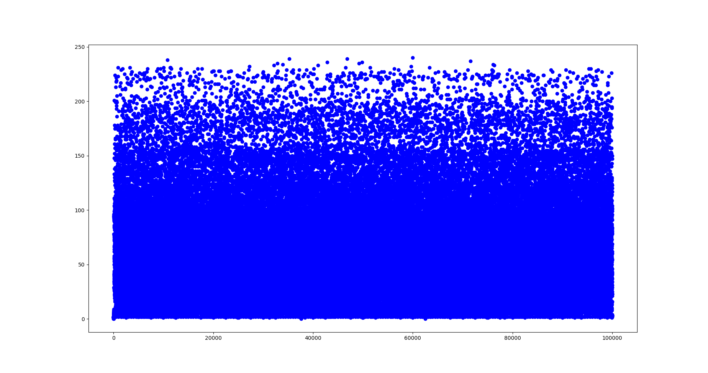
Τα μήκη των ακολουθιών διαφορετικών ψευδοτυχαίων αριθμών που μας δίνει η γεννήτρια του von Neumann.#
Αυτό που παρατηρούμε παραπάνω είναι ότι στις περισσότερες περιπτώσεις τα μήκη των ακολουθιών είναι ιδιαίτερα μικρά ενώ, γενικά, κυμαίνονται το πολύ μέχρι περίπου 250 - μήκος σχετικά μικρό σε σχέση με τους 100.000 πενταψήφιους αριθμούς που έχουμε στη διάθεσή μας. Επειδή το παραπάνω διάγραμμα είναι ίσως λίγο φτωχό σε πληροφορίες, ας δοκιμάσουμε να ομαδοποιήσουμε τα δεδομένα μας σε ομάδες των 100 παρατηρήσεων και να δούμε το μέσο μήκος κάθε ομάδας. Αυτό το πετυχαίνουμε με το ακόλουθο script - μικρή παραλλαγή του προηγούμενου:
import matplotlib.pyplot as plt
def rng(seed):
return ((seed ** 2) % 10 ** 7) // (10 ** 2)
def random_lengths():
lengths = [0]*(10**3)
for i in range(10**5):
seed = i
next_seed = rng(seed)
seen = [i]
while not (next_seed in seen):
seen.append(next_seed)
lengths[i//100] += 1
seed = next_seed
next_seed = rng(seed)
return [x/100 for x in lengths]
if __name__ == '__main__ʹ:
lengths = random_lengths()
plt.plot(lengths, 'boʹ)
plt.show()
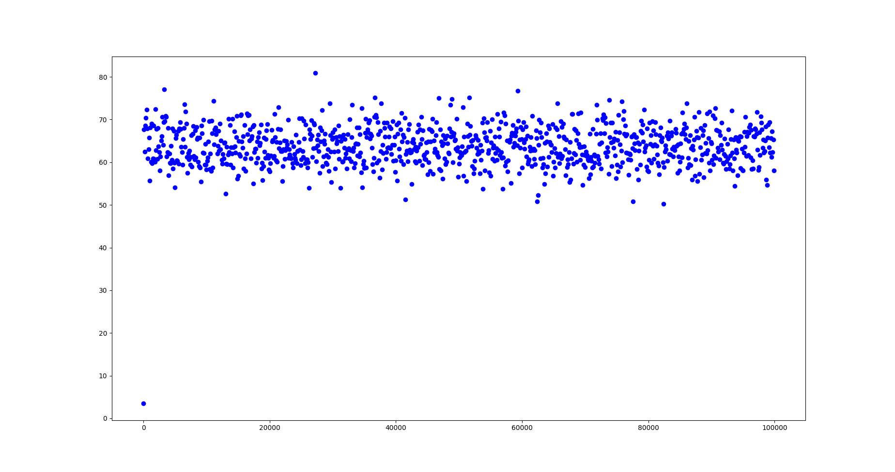
Καλύτερα τώρα!#
Εδώ βλέπουμε αρκετά πιο ξεκάθαρα ότι η γεννήτρια του von Neumann μας δίνει ακολουθίες αριθμών που μπορούν να μας πείσουν ότι είναι κάπως… τυχαίες, με μέσο μήκος κάπου μεταξύ 60 και 70. Αν σκεφτείτε ότι έχουμε στη διάθεσή μας 100.000 αριθμούς βλέπετε ότι το να μπορούμε να πάρουμε μία ακολουθία περίπου τυχαίων αριθμών μήκους μόλις 70 είναι, θα έλεγε κανείς, μία μικρή πανωλεθρία.
Λίγος φορμαλισμός#
Εντάξει, πολύ πειραματιστήκαμε, είναι ώρα να περάσουμε σε λίγο πιο αυστηρά χωράφια. Μπορεί η πρώτη μας απόπειρα να φτιάξουμε μία γεννήτρια τυχαίων αριθμών να απέτυχε, σε γενικές γραμμές, αλλά ακριβώς αυτή η αποτυχία μάς δίνει αρκετό υλικό για να μπορέσουμε να περιγράψουμε σε πιο αυστηρό επίπεδο κάποιες από τις ιδιότητες που θα θέλαμε να έχει ένα ον που γεννά αριθμούς με φαινομενικά τυχαίο πρώτο.
Αρχικά, μπορούμε να δούμε ότι στα παραπάνω, κάθε όρος προέκυπτε αιτιοκρατικά - ντετερμινιστικά - από τον προηγούμενό του, πάντοτε με τον ίδιο τρόπο. Με άλλα λόγια, όπως είχαμε αναφέρει και στην αρχή, αρκεί να γνωρίζουμε τον αρχικό όρο της ακολουθίας των αριθμών μας, το seed, και τον τρόπο με τον οποίο μεταβαίνουμε από έναν όρο στον επόμενό του, για να περιγράψουμε κάθε όρο της ακολουθίας μας. Έτσι, αν ονομάσουμε \(f\) αυτόν τον «τρόπο» και \(a_0\) το seed μας, μπορούμε να περιγράψουμε την ακολουθία των ψευδοτυχαίων αριθμών μας με τον ακόλουθο αναδρομικό ορισμό:
Με βάση τον παραπάνω ορισμό, μπορούμε να περιγράψουμε λίγο πιο κλειστά την ακολουθία μας ως:
όπου με \(f^n(x)\) συμβολίζουμε τη σύνθεση της συνάρτησης \(f\) \(n\) φορές με τον εαυτό της, υπολογισμένη στο \(x\) . Δηλαδή:
Επίσης, αυστηρά μιλώντας, το μήκος που αναφέραμε παραπάνω είναι, ουσιαστικά, ο παρακάτω φυσικός αριθμός, \(\mu\) :
Προσέξετε ότι ο \(\mu\) είναι πάντοτε καλά ορισμένος, δεδομένου ότι όπως και να έχει, αφού επιλέγουμε μεταξύ πεπερασμένων στο πλήθος ακεραίων κάθε φορά - ένας υπολογιστής έχει πεπερασμένη μνήμη, άλλωστε - σε κάποια στιγμή θα τους έχουμε εξαντλήσει όλους και θα πάρουμε ξανά κάποιον αριθμό που έχουμε ήδη συναντήσει.
Όπως καταλαβαίνετε, από τα παραπάνω φαίνεται μία σημαντική ιδιότητα που θα θέλαμε να είναι κάθε γεννήτρια ψευδοτυχαίων αριθμών που έχει τη μορφή και τη δομή της γεννήτριας του von Neumann: να έχει αρκετά μεγάλο \(\mu\) . Είναι σαφές γιατί αυτό είναι επιθυμητό: για όση περισσότερη ώρα δεν επαναλαμβανόμαστε, τόσο αποφεύγουμε να καταλάβει κανείς ότι δεν παράγουμε αριθμούς στην τύχη.
Η παραπάνω ιδιότητα, όπως είδαμε, εξαρτάται από το seed, καθώς για κάποιες τιμές του seed έχουμε ιδιαίτερα μικρές ακολουθίες ενώ για άλλες έχουμε λιγότερο μικρές. Προσέξτε, επίσης, ότι τα παραπάνω αφορούν μόνο την γεννήτρια του von Neumann που μελετάμε. Πράγματι, μία πιο πειστική γεννήτρια τυχαίων αριθμών ενδέχεται να παράγει δύο και τρεις διαδοχικές φορές τον ίδιο αριθμό χωρίς όμως να επαναλάβει και τις επόμενες τιμές που είχε υπολογίσει στο παρελθόν - θα ασχοληθούμε με τέτοιες γεννήτριες στο μέλλον.
Ένα άλλο, επίσης σημαντικό, χαρακτηριστικό που θα θέλαμε να έχει μία γεννήτρια ψευδοτυχαίων αριθμών είναι η κατανομή των αποτελεσμάτων που μας δίνει να είναι όσο το δυνατόν περισσότερο ομοιόμορφη. Με άλλα λόγια, διαισθητικά, θα θέλαμε η συχνότητα με την οποία εμφανίζεται κάθε αριθμός να είναι περίπου η ίδια - θα το εκφράσουμε και τυπικά αυτό στη συνέχεια. Αυτό είναι σαφές ότι συνδέεται άμεσα με τα παραπάνω, καθώς στην περίπτωσή μας, για όποια τιμή του seed κι αν επιλέξουμε, η γεννήτρια του von Neumann δίνει το πολύ 250 διαφορετικούς αριθμούς, επαναλαμβάνοντας ένα τμήμα αυτών τελικά, επʹ άπειρον. Αυτό έχει ως αποτέλεσμα, σαφώς, κάποιοι αριθμοί να εμφανίζονται από ένα σημείο κι έπειτα με πολύ μεγάλη συχνότητα ενώ κάποιοι άλλοι να μην εμφανίζονται ποτέ.
Διορθώνοντας τα λάθη μας#
Με όλα τα παραπάνω να έχουν λεχθεί για τη γεννήτρια του von Neumann μπορεί κάποιοι να έχετε εγκαταλείψει το όνειρο μίας σχετικά απλής και αξιόπιστης γεννήτριας τυχαίων αριθμών. Ωστόσο, μία κακή ιδέα, με τις κατάλληλες τροποποιήσεις, μπορεί να γίνει αρκετά καλή - το έχουμε ξαναδεί αυτό. Αυτό θα προσπαθήσουμε να κάνουμε και σε αυτήν την περίπτωση!
Οι ακολουθίες Weyl#
Ένα εργαλείο το οποίο θα βελτιώσει σημαντικά την απόδοση της παραπάνω γεννήτριας είναι οι ακολουθίες Weyl. Οι ακολουθίες Weyl είναι ακολουθίες αριθμών που έχουν μία ιδιαίτερα σημαντική ιδιότητα, άμεσα σχετική με όσα θέλουμε να κάνουμε: είναι ισοκατανεμημένες. Με τον όρο ισοκατανεμημένες εννοούμε το εξής:
Ο παραπάνω ορισμός αποτυπώνει με ιδιαίτερα άμεσο και κομψό τρόπο μία σημαντική ιδιότητα μίας ακολουθίας αριθμών που μοιάζει τυχαία. Πρέπει το μέρος των όρων της ακολουθίας που βρίσκονται σε ένα υποδιάστημα του \([a,b]\) να είναι ανάλογο του μήκους του. Για παράδειγμα, αν θέλουμε να εξετάσουμε αν μία ακολουθία είναι ισοκατανεμημένη στο \([0,1],\) τότε θα θέλαμε, τελικά, περίπου οι μισοί της όροι να βρίσκονται στο \([0,1/2]\) , περίπου το ένα τρίτο των όρων της να βρίσκεται στο \([1/3,2/3]\) , περίπου το ένα δέκατο των όρων της να βρίσκεται στο \([3/10,4/10]\) κ.ο.κ.
Μιλήσαμε παραπάνω για το «μήκος» ενός διαστήματος, κάτι που είναι εύκολο και κάπως προφανές να μετρήσουμε. Ωστόσο, μπορούμε να μιλήσουμε και για το «μήκος» άλλων συνόλων; Για παράδειγμα, ποιο είναι το μήκος του συνόλου \((-2,4)\cup\{5, 6, 7\}&bg=fad65e\) , άραγε; Αν δεν μπορείτε να απαντήσετε με ευκολία, ξεκινήστε το διάβασμα από εδώ!
Ωραίος ο ορισμός μας, αλλά τώρα πρέπει να εξετάσουμε αν υπάρχουν όντως τέτοιες ακολουθίες - αλλιώς, ο ορισμός μας είναι κενός νοήματος. Εδώ έρχεται στο παιχνίδι ο Hermann Weyl. Ένα πολύ γνωστό αποτέλεσμα που έχει αποδείξει ο κύριος Weyl είναι το θεώρημα της ισοκατανομής το οποίο μας λέει το εξής:
Αν \(a\in\mathbb{R}\) τότε η ακολουθία \((0,a-[a],2a-[2a],3a-[3a],\ldots)\) , όπου \([a]\) είναι το ακέραιο μέρος του \(a,\) είναι ισοκατανεμημένη στο \([0,1)\) αν και μόνο αν το \(a\) είναι άρρητος.
Αρχικά να πούμε ότι, επί της ουσίας, για έναν πραγματικό αριθμό \(x\) , η ποσότητα \(x-[x]\) είναι το κλασματικό μέρος του \(x\) - το μέρος δηλαδή που βρίσκεται δεξιά από την υποδιαστολή στο δεκαδικό του ανάπτυγμα. Επομένως, αυτό που μας λέει το παραπάνω θεώρημα είναι ότι τα κλασματικά μέρη των όρων της ακολουθίας \((0,a,2a,3a,\ldots)\) είναι ισοκατανεμημένα στο \([0,1)\) ακριβώς όταν ο \(a\) είναι άρρητος - πολλές φορές αντί για τον όρο «κλασματικό μέρος του \(x\) » χρησιμοποιούμε τον όρο \(x\mod 1\) ή \(x\) modulo 1.
Το παραπάνω αποτελεί, πέρα από κάτι άμεσα χρήσιμο για εμάς, κι έναν ιδιαίτερα κομψό χαρακτηρισμό των άρρητων αριθμών: ένας αριθμός είναι άρρητος ακριβώς όταν τα κλασματικά μέρη των ακέραιων πολλαπλασίων του modulo 1 είναι ισοκατανεμημένα στο \([0,1)\) . Με άλλα λόγια, το πολλαπλάσια των άρρητων (και μόνο αυτά) έχουν την ενδιαφέρουσα ιδιότητα να μοιράζονται ομοιόμορφα μέσα στους αριθμούς (κατά κάποιο τρόπο) κάτι που, όπως φαίνεται, δεν μπορούν να κάνουν τα πολλαπλάσια των ρητών.
Η αλήθεια είναι ότι η απόδειξη του παραπάνω είναι εν γένει περίπλοκη και, προς το παρόν, δε θα τη συζητήσουμε. Αυτό όμως που μπορούμε εύκολα να δούμε είναι η μία από τις δύο κατευθύνσεις του θεωρήματος και, για να είμαστε και ακριβείς, θα δούμε γιατί το συμπέρασμα δεν ισχύει αν το \(a\) είναι ρητός.
Ας ξεκινήσουμε με ένα παράδειγμα: \(a=\frac{3}{8}\) . Ξεκινάμε παίρνοντας κάποια πολλαπλάσια του \(a\) και κρατώντας μόνο τα κλασματικά μέρη τους, όπως φαίνεται παρακάτω (οι μπλε κουκκίδες στον κάτω άξονα είναι τα κλασματικά μέρη):
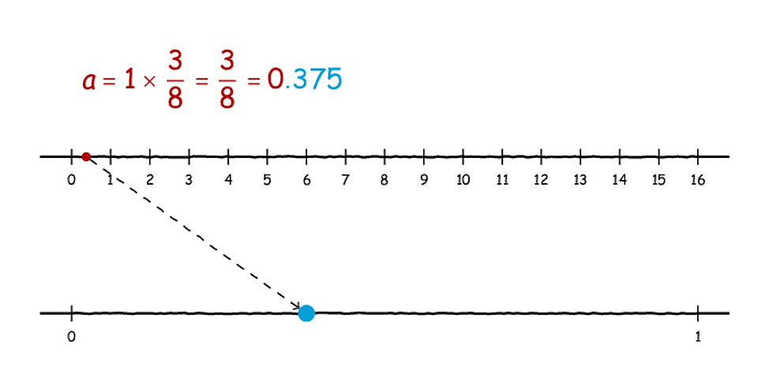
Τσουπ! Τσουπ! Τσουπ!#
Όπως παρατηρείτε, δεν έχουν και κάποια ιδιαίτερη ποικιλία τα εν λόγω κλασματικά μέρη. Γιατί, άραγε, να συμβαίνει αυτό;
[Σκεφτείτε το για λίγο…]
Λοιπόν, όλα τα πολλαπλάσια του \(a=\frac{3}{8}\) είναι… όγδοα. Αυτό σημαίνει ότι μπορούν να αναπαρασταθούν ως κλάσματα με παρονομαστή το 8, οπότε το κλασματικό μέρος τους προκύπτει έπειτα από μία διαίρεση με το 8. Ας δούμε λίγο μία διαίρεση ενός αριθμού με το 8:
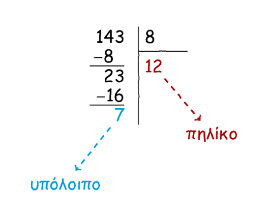
Κλασική διαίρεση με πηλίκο και υπόλοιπο…#
Όπως ίσως θυμάστε, όταν διαιρούμε, το υπόλοιπο της διαίρεσης πρέπει πάντοτε να είναι μικρότερο από τον διαρέτη (κι αυτό γιατί αλλιώς θα μπορούσαμε να συνεχίσουμε τη διαίρεσή μας). Επομένως, όταν διαιρούμε με το 8, υπάρχουν μονάχα 8 εναλλακτικές για το υπόλοιπο:
0, 1, 2, 3, 4, 5, 6, 7.
Τώρα, το ακέραιο μέρος ενός κλάσματος (πιο επίσημα, ενός ρητού) είναι, όπως φαντάζεστε, το πηλίκο της διαίρεσης του αριθμητή με τον παρονομαστή. Συνεπώς, μπορούμε να πούμε ότι:
Για να βρούμε και το κλασματικό μέρος δεν έχουμε παρά να συνεχίσουμε τη διαίρεση, προσθέτοντας μία υποδιαστολή στα δεξιά του πηλίκου και «κατεβάζοντας» ένα μηδενικό:
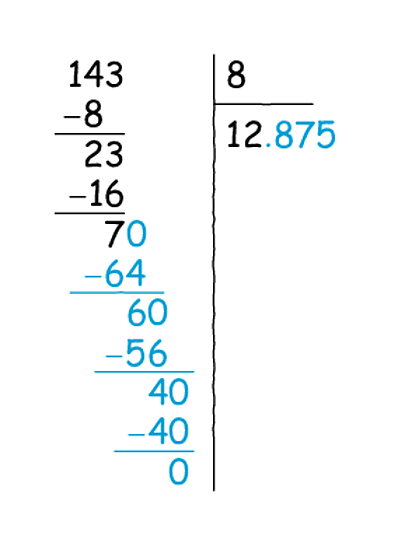
Πωπωπω! Κουραστική που είναι η διαίρεση…#
Δεδομένου ότι έχουμε μόλις 8 διαφορετικά υπόλοιπα, έχουμε και 8 διαφορετικά κλασματικά μέρη. Στην περίπτωσή μας, με λίγη γυμναστική, αυτά είναι τα εξής:
.000, .125, .250, .375, .500, .625, .750, .875.
Συνεπώς, εκ των πραγμάτων, δεν μπορούμε να έχουμε μία ισοκατανομή των κλασματικών μερών ενός ρητού, καθώς αυτά είναι πεπερασμένα στο πλήθος. Για παράδειγμα, ενώ στο μπλε διάστημα παρακάτω περιέχονται κλασματικά μέρη της παραπάνω ακολουθίας, στο κόκκινο διαστηματάκι δεν έχουμε κανένα, ενώ αυτό δεν είναι κενό (όπως υποννοεί και ο ορισμός του Weyl):
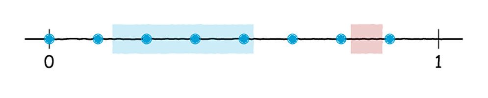
Το κόκκινο διάστημα είναι λίγο… άδειο.#
Αυτή ακριβώς η «περατότητα» των κλασματικών μερών είναι που καθιστά κάθε ακολουθία σαν την παραπάνω μη ισοκατανεμημένη (κατά Weyl, πάντα). Αντίθετα, αν ξεκινήσουμε από έναν άρρητο αριθμό, έχουμε ένα πιο «κομψό» αποτέλεσμα:
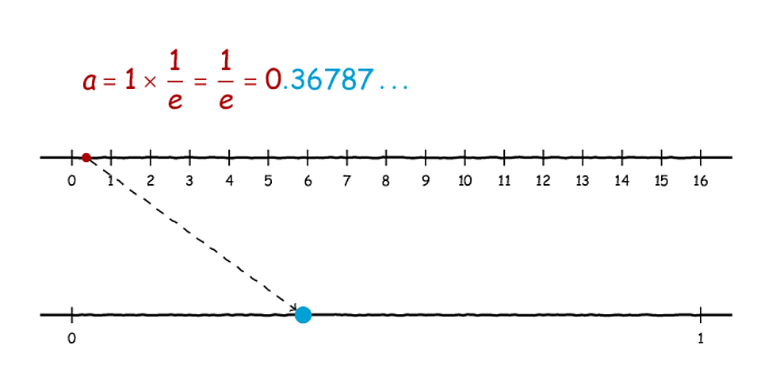
Εδώ τα πράγματα είναι πιο κομψά απλωμένα.#
Αν και δε θα ασχοληθούμε να αποδείξουμε γιατί συμβαίνει αυτό που βλέπουμε στην παραπάνω εικόνα, παίρνουμε μία γεύση της κατάστασης: τα κλασματικά μέρη ενός άρρητου απλώνονται πολύ πιο κομψά μέσα στο \([0,1]\) σε σχέση με ενός ρητού.
Πάμε τώρα να αποδείξουμε κι αυτό που υποσχεθήκαμε. Έστω, λοιπόν, ένας ρητός \(a=\frac{m}{n}\) , με \(m,n\) σχετικά πρώτους. Τότε, παρατηρούμε ότι, όπως και στο παραπάνω σχήμα, η υποψήφια ακολουθία Weyl, έστω \(a_k\) , \(k=0,1,\ldots\) , έχει μία περιοδικότητα, αφού:
δηλαδή \(a_{kn+s}=a_s\) για \(s=0,1,2,\ldots,n-1\) .
Το παραπάνω, αν και φαίνεται λίγο περίπλοκο, μας λέει κάτι απλό. Ας δούμε, ειδικότερα, τον όρο \(a_n\) της παραπάνω ακολουθίας:
Με άλλα λόγια, μόλις φτάσουμε στον \(n-\) οστό όρο της ακολουθίας βλέπουμε έναν ακέραιο, δηλαδή έναν αριθμό με μηδενικό κλασματικό μέρος. Επομένως, ο \(n-\) οστός όρος της ακολουθίας είναι μηδενικός. Επειδή, τώρα, κάθε όρος της ακολουθίας προκύπτει από τον προηγούμενό του με τον ίδιο ακριβώς τρόπο - προσθέτοντας \(a\) και κρατώντας μόνο το κλασματικό μέρος - άπαξ και συναντήσουμε έναν όρο δεύτερη φορά, όπως και με την ακολουθία της γεννήτριας του von Neumann, παραπάνω, μπαίνουμε σε έναν ατέρμονα βρόχο, στον οποίο επαναλαμβάνουμε συνεχώς τους ίδιους αριθμούς. Όμως, αυτό σημαίνει, ειδικότερα, ότι οι όροι της ακολουθίας μας παίρνουν κάποιες πεπερασμένες στο πλήθος - το πολύ \(n\) - διαφορετικές τιμές, άρα η ακολουθία μας δεν είναι ισοκατανεμημένη.
Ε, για την αντίθετη συνεπαγωγή, αυτή που αφορά τους άρρητους, σκεφτείτε ότι οι άρρητοι δεν έχουν αυτή την κακή ιδιότητα των ρητών και, επιπλέον, τα κλασματικά μέρη των πολλαπλασίων τους είναι ομοιόμορφα μοιρασμένα, για το οποίο πήραμε μία ιδέα και από τη ζωγραφική που κάναμε παραπάνω.
Παραπάνω πήραμε ως άρρητο τον αριθμό \(\frac{1}{e}&bg=fad65e\) που είναι περίπου ίσος με 3/8. Αν, τώρα, αυτό το «e» δε σας λέει και πολλά ή αν δεν ξέρετε τι σχέση έχει αυτό το «e» με τον γάιδαρο της γειτονιάς σας ή με τη λοταρία στην οποία κερδίσατε 5.000€ αλλά χάσατε τον λαχνό, ρίξτε μια ματιά εδώ.
Άρρητοι vs Υπολογιστές;#
Τώρα, ίσως κάποιοι αναρωτηθείτε: «Και πώς αναπαριστούμε έναν άρρητο σε ένα ηλεκτρονικό υπολογιστή». Η απάντηση είναι πάρα πολύ απλή: Δεν μπορούμε να αναπαραστήσουμε έναν άρρητο σε έναν ηλεκτρονικό υπολογιστή!
- Καλά, είμαστε σοβαροί, τώρα; Ξεκινάς με μία ερώτηση, οριακά ρητορική, και την απαντάς; - Γιατί ρητορική; Πόσος κόσμος ξέρει ότι όταν γράφει :math:`sqrt{2}` στο κομπιουτεράκι του, αυτό του λέει ψέματα; - Τι ψέματα; Να, εγώ τώρα γράφω στο κομπιουτεράκι μου :math:`sqrt{2}` και γράφει: 1,414213562. Ψέματα λέει; - Ναι, προφανώς, αφού είναι άρρητη η :math:`sqrt{2}` , ρε συ, πώς γίνεται να έχει μόνο [μετράει ψηφία] 9 δεκαδικά ψηφία; - Ε, εντάξει, 9 μπορεί να δείξει η οθόνη και τα άλλα απλά τα θυμάται… - Πώς τα θυμάται, πού τα χωράει; Μπορείς εσύ να θυμάσαι άπειρα ψηφία; Τι είσαι;
Δεδομένου ότι όλοι οι άρρητοι έχουν άπειρο δεκαδικό - και δυαδικό, σαφώς - ανάπτυγμα, δεν μπορούν να περιγραφούν από τα πεπερασμένα στο πλήθος στοιχεία μνήμης ενός υπολογιστή. Οπότε, γιατί συζητάμε για αυτές τις ακολουθίες Weyl, αφού δε μπορούν να μας φανούν χρήσιμες στην περίπτωσή μας, καθώς δε χωράνε στη μνήμη μας;
Αν και άμεσα, πράγματι, δεν μπορούμε να υπολογίσουμε μία ακολουθία Weyl σε έναν υπολογιστή σε όλο της το μεγαλείο, μπορούμε να βρούμε ένα διακριτό ανάλογο μίας τέτοιας ακολουθίας. Πρώτα, όμως, θα βοηθούσε να δώσουμε κι έναν ανάλογο διακριτό ορισμό μίας ισοκατανεμημένης ακολουθίας φυσικών αριθμών:
Επί της ουσίας, απλώς πήραμε τον γενικό ορισμό που είδαμε παραπάνω και τον περιορίσαμε κατάλληλα σε διαστήματα φυσικών αριθμών. Τώρα, θα κάνουμε κάτι ανάλογο και με το θεώρημα της ισοκατανομής του Weyl. Για την ακρίβεια, έχουμε το παρακάτω αποτέλεσμα:
Αν \(n,m\) είναι δύο σχετικά πρώτοι φυσικοί αριθμοί, τότε η ακολουθία \((0,m,2m,3m,\ldots)\mod n\) είναι ισοκατανεμημένη στο \(\{0,1,2,\ldots,n\}\) .
Το παραπάνω θεώρημα είναι, πράγματι, ένα ανάλογο του γενικού θεωρήματος ισοκατανομής του Weyl, το οποίο όμως είναι ιδιαίτερα εξυπηρετικό, καθώς αναφέρεται σε ακέραιους αριθμούς, δηλαδή πράγματα που ένας υπολογιστής, σε γενικές γραμμές, είναι καλός στο να διαχειρίζεται. Πριν προχωρήσουμε, ας δούμε γιατί το παραπάνω θεώρημα ισχύει, ζωγραφίζοντας λίγο όπως πριν. Αρχικά, ας πάρουμε \(m=3\) και \(n=4\) για να μη χαθούμε και στις πράξεις. Για να υπολογίσουμε την ακολουθία \(km\mod n\) πρέπει, διαδοχικά:
να πολλαπλασιάσουμε το \(m=3\) και τον \(k=0,1,2,\ldots\) ,
να υπολογίσουμε το υπόλοιπο της διαίρεσης με το \(n=4\) .
Λίγο πιο χρωματιστά, έχουμε το εξής:
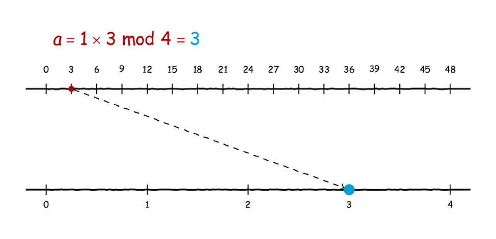
Φυτεύοντας ακέραια υπόλοιπα (εεε…;)#
Εδώ φαίνεται να πηγαίνουν όλα καλά, έτσι; Πιάνουμε όλους τους αριθμούς από το 0 έως και το \(n-1=3\) και με έναν προφανή τρόπο, είναι η αλήθεια. Ας πάμε τώρα να παίξουμε με μία περίπτωση που δεν ικανοποιεί τις υποθέσεις του θεωρήματος: \(m=2\) και \(n=4\) . Σε αυτή την περίπτωση οι δύο αριθμοί δεν είναι σχετικά πρώτοι, γεγονός που οδηγεί στο ακόλουθο:
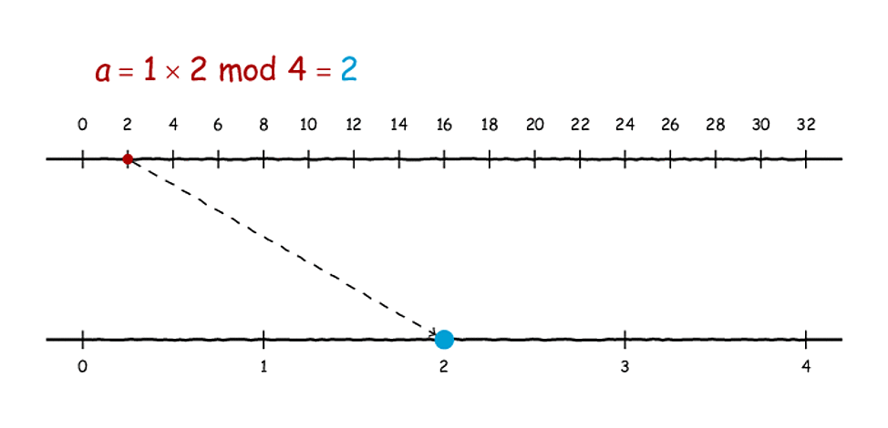
Ωχ! Εδώ κάτι χάνουμε…#
Αυτό που συμβαίνει παραπάνω είναι λίγο αναμενόμενο, αν το σκεφτεί κανείς ψύχραιμα. Επειδή πολλαπλασιάζουμε με το 2, το αποτέλεσμα που παίρνουμε είναι πάντοτε άρτιος (ζυγός). Αυτό σημαίνει ότι, διαιρώντας το αποτέλεσμα με το 4, δεν πρόκειται ποτέ να πάρουμε υπόλοιπο που να είναι 1 ή 3. Συνεπώς, τα αποτελέσματά μας «ταλαντώνονται» ανάμεσα στο 0 και το 2, και άρα δεν καλύπτουν ομοιόμορφα το σύνολο \(\{0,1,2,3\}\) .
Για να αποδείξουμε, τώρα, τα παραπάνω, παίρνουμε δύο σχετικά πρώτους φυσικούς αριθμούς \(m,n\) , και θεωρούμε την ακολουθία που αναφέρει το θεώρημα:
Με άλλα λόγια, παίρνουμε πολλαπλάσια του \(m\) , τα διαιρούμε με το \(n\) και κρατάμε τα υπόλοιπα αυτών των διαιρέσεων. Τώρα, ας παρατηρήσουμε και «επίσημα» ότι η παραπάνω ακολουθία είναι περιοδική και μάλιστα:
άρα \(a_{kn+s}=a_s\) για \(s=0,1,2,\ldots,n-1\) . Μένει τώρα να αξιοποιήσουμε το γεγονός ότι οι \(m,n\) είναι σχετικά, πρώτοι, δηλαδή ότι έχουν μέγιστο κοινό διαιρέτη ίσο με τη μονάδα. Γιʹ αυτόν τον σκοπό θα αξιοποιήσουμε μία χρήσιμη ταυτότητα ακεραίων αριθμών:
όπου με \({\rm gcd}(n,m)\) συμβολίζουμε τον μέγιστο κοινό διαιρέτη δύο αριθμών και με \({\rm lcm}(n,m)\) το ελάχιστο κοινό τους πολλαπλάσιο. Με δεδομένο ότι οι δύο αριθμοί είναι σχετικά πρώτοι, παίρνουμε ότι \({\rm lcm}(n,m)=nm\) , δηλαδή ότι δεν υπάρχει κανένα άλλο κοινό πολλαπλάσιο των \(n,n\) μικρότερο το \(nm\) . Τώρα, αν \(s,t\in\{0,1,2,\ldots,n-1\}\) με \(s\geq t\) παρατηρούμε ότι:
Με άλλα λόγια, δύο όροι της \(a_k\) είναι ίσοι αν και μόνο αν το \((s-t)m\) είναι πολλαπλάσιο του \(n\) . Άρα, θα πρέπει το \((s-t)m\) να είναι κοινό πολλαπλάσιο του \(m\) και του \(n\) και άρα \((s-t)m\geq nm\Leftrightarrow s-t\geq n\) ή \(s-t=0\) . Επειδή, τώρα, \(s,t\in\{0,1,2\ldots,n-1\}\) , έπεται ότι \(s-t\in\{0,1,2,\ldots,n-1\}\) , άρα \(s-t<n\) , συνεπώς, \(s-t=0\Leftrightarrow s=t\) . Δηλαδή, όλοι οι όροι της \(a_k\) για δείκτες από \(0\) μέχρι \(n-1\) είναι διαφορετικοί, συνεπώς η \(a_k\) , αν περιοριστεί στο \(\{0,1,2,\ldots,n-1\}\) είναι ένα «ανακάτεμα» των αριθμών του \({0,1,2,\ldots,n-1}\) - μία μετάθεση, όπως λέμε.
Αυτό μας δίνει άμεσα και την πολυπόθητη ιδιότητα της ισοκατανομής. Διαισθητικά, αρχικά, αυτό είναι προφανές από το παραπάνω σχήμα που παραθέτουμε παρακάτω, για να μην τρέχετε:
Πόσο ωραία «φυτεύονται» τα υπόλοιπα…#
Όπως βλέπετε, η εν λόγω μετάθεση του \(\{0,1,2,3\}\) εδώ είναι η \((3,2,1,0)\) οπότε, διαισθητικά πάντα, τα δυνατά υπόλοιπα mod 4 κατανέμονται όσο πιο ομοιόμορφα γίνεται καθώς προχωράμε με τους όρους της ακολουθίας μας.
Πιο αυστηρά τώρα, πράγματι, αν πάρουμε ένα αρχικό τμήμα φυσικών αριθμών, έστω \(A_{\ell}=\{0,1,2,\ldots,\ell-1\}\) , για \(\ell\leq n\) , τότε παρατηρούμε ότι το πλήθος των όρων της \(a_k\) που βρίσκονται στο \(A_\ell\) έχει την εξής ενδιαφέρουσα ιδιότητα: Αν \(k\in\{sn,sn+1,\ldots,sn+n-1\}\) για κάποιο \(s=0,1,2,\ldots\) τότε:
Το παραπάνω είναι, πράγματι προφανές. Είπαμε ότι η \(a_k\) , αν περιοριστεί στο \(\{0,1,\ldots,n-1\}\) αποτελεί μία μετάθεση των στοιχείων του, δηλαδή, τελικά, οι όροι \(\{a_0,a_1,\ldots,a_{n-1}\}\) είναι ακριβώς οι αριθμοί \({0,1,\ldots,n-1}\) , απλώς με άλλη σειρά. Έτσι, καθώς προχωράμε, από τον \(a_0\) προς τον \(a_{n-1}\) , θα έχουμε κάθε στιγμή στα χέρια μας από 0 μέχρι και \(\ell\) από τα \(\ell\) στοιχεία του \(A_\ell\) - τελικά, σαφώς, θα τα έχουμε πάρει όλα. Έπειτα, από την περιοδικότητα της \(a_k\) , το ίδιο έχουμε και για το \(\{n,n+1,\ldots,2n-1\}\) . Δηλαδή, θα έχουμε ήδη πάρει τους \(\ell\) όρους του \(A_\ell\) από μία φορά - με τους όρους \(\{a_0,a_1,\ldots,a_{n-1}\}\) - και τώρα θα τους ξαναπαίρνουμε για δεύτερη φορά - μέσα στους όρους \(\{a_n,a_{n+1},\ldots,a_{2n-1}\}\) - άρα έχουμε από \(\ell\) μέχρι και \(2\ell\) όρους. Συνεχίζουμε αναλόγως.
Τώρα, θέτουμε για ευκολία \(b_k=\#\{s\in\{0,1,2,\ldots,k\}:a_s\in A_\ell\}\) - το πλήθος, δηλαδή, των στοιχείων του \(A_\ell\) που έχουμε συναντήσει ως το \(k\) . Η \(b_k\) είναι σαφώς αύξουσα και, αν \(k=sn,sn+1,\ldots,sn+n-1\) τότε έχουμε άμεσα ότι \(b_{sn}\leq b_k\leq b_{sn+n-1}\) . Από τα παραπάνω, όμως, έχουμε άμεσα ότι:
Συνεπώς, για \(k=sn,sn+1,\ldots,sn+n-1\) έπεται ότι:
Τώρα, επειδή \(sn\leq k\leq sn+n-1=(s+1)n-1<(s+1)n\) , έπεται ότι:
Αν τώρα αφήσουμε \(s\to\infty\) , οπότε και \(k\to\infty\) , έπεται άμεσα ότι:
άρα η ακολουθία μας είναι, πράγματι, ισοκατανεμημένη στο \(\{0,1,2,\ldots,n-1\}\) .
Παρατηρώντας τον Weyl…#
Τώρα που βρήκαμε μία αρκετά υποσχόμενη ακολουθία, ας δούμε και λίγο πώς μοιάζει. Ας επιλέξουμε για \(n=2^{10}\) και για \(m=101\) - θα εξηγήσουμε αργότερα γιατί επιλέξαμε δύναμη του 2 - και ας σχεδιάσουμε τις πρώτες 3000 τιμές της ακολουθίας. Για να το πετύχουμε αυτό θα χρησιμοποιήσουμε το ακόλουθο script:
import matplotlib.pyplot as plt
def weyl(seed, a, n):
return (seed + a) % n
if __name__ == '__main__ʹ:
numbers = []
seed = 0
a = 101
n = 2 ** 10
for i in range(3000):
seed = weyl(seed, a, n)
numbers.append(seed)
plt.plot(numbers, 'boʹ)
plt.show()
Αυτό μας δίνει το ακόλουθο γράφημα, όπου οι κουκκίδες αναπαριστούν τους όρους της ακολουθίας μας:
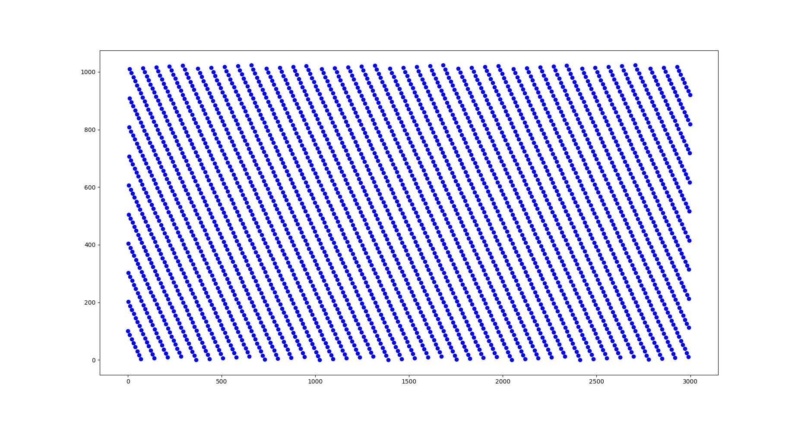
Ό,τι είναι ισοκατανεμημένη, είναι…#
Σαφώς, η παραπάνω ακολουθία είναι ισοκατανεμημένη - είναι αρκετά οφθαλμοφανές. Εστιάζοντας λίγο στους πρώτους 1000 όρους, έχουμε το ακόλουθο γράφημα - έχουμε συνδέσει τους διαδιοχικούς όρους της ακολουθίας με μία γραμμή για να φαίνεται με ποια σειρά αυτοί εμφανίζονται:
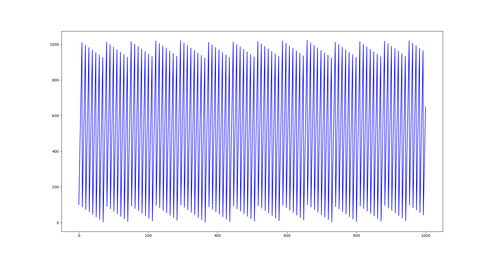
Πάνω-κάτω, πάνω-κάτω…#
Ωστόσο, η παραπάνω συμπεριφορά, όπως φαντάζεστε, δε μοιάζει τόσο τυχαία - αν και, μην εξαπατάστε, οι κορυφές που φαίνονται δεν είναι ισοϋψείς στο παραπάνω σχήμα.
Για την ακρίβεια, αν εκτυπώσουμε τους 200 πρώτους όρους της ακολουθίας μας, έχουμε:
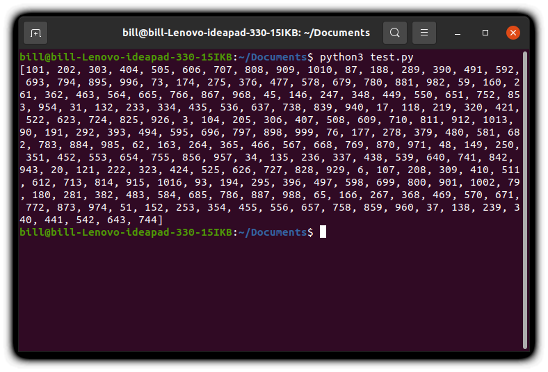
Εεεε, είναι λίγο προβλέψιμο το αποτέλεσμα…#
Κοιτάζοντας λίγο 2-3 διαδοχικούς όρους καταλαβαίνουμε διαισθητικά πώς προκύπτει ο επόμενος - προσθέτοντας 101 και, όποτε χρειάζεται, κρατώντας το υπόλοιπο της διαίρεσης με το \(2^{10}=1024\) . Δεν είναι, λοιπόν, χρήσιμες ούτε οι ακολουθίες Weyl για να πείσουμε κάποιον τρίτο ότι παράγουμε αριθμούς στην τύχη.
Ανακατεύοντας τις ιδέες μας#
Είδαμε δύο ιδέες, αμφότερες αναποτελεσματικές, με την καθεμιά, ωστόσο, να έχει κάποια θετικά (και κάποια αρνητικά) γνωρίσματα. Τώρα θα κάνουμε κάτι που θα έχει είτε πολύ καλά είτε πολύ κακά αποτελέσματα: θα μπλέξουμε και τις δύο ιδέες.
Για την ακρίβεια, αυτό που θα κάνουμε θα είναι το εξής:
Ξεκινώντας με ένα seed, έστω \(x\) , υψώνουμε στο τετράγωνο, παίρνοντας το \(x^2\) .
Εδώ, αντί να ακολουθήσουμε τη λογική του von Neumann και να κρατήσουμε τα πέντε μεσαία ψηφία του, θα μπλέξουμε μέσα την ιδέα του Weyl. Δηλαδή, επιλέγοντας κι ένα δεύτερο seed, έστω \(n\) , προσθέτουμε στο \(x^2\) τον πρώτο όρο της ακολουθίας του Weyl που παράγεται από αυτό το seed, - επιλέγουμε \(n=2^{32}\) , για λόγους που θα εξηγήσουμε ευθύς αμέσως.
Από τον νέο αριθμό που έχουμε, κρατάμε τα μεσαία πέντε ψηφία του.
Επαναλαμβάνουμε με τον αριθμό που μόλις υπολογίσαμε στη θέση του \(x\) .
Πριν εξηγήσουμε το σκεπτικό μας, να πούμε ότι επιλέξαμε το \(2^{32}\) γιατί αυτό είναι το συνηθισμένο όριο εντός του οποίου οι περισσότεροι υπολογιστές μπορούν να αποθηκεύσουν ακέραιους στη μνήμη τους. Με άλλα λόγια, ένας τυπικός ηλεκτρονικός υπολογιστής αναγνωρίζει ακεραίους στο διάστημα \([-2^{32},2^{32}-1]\) . Έτσι, πρακτικά, γλυτώνουμε τη διαίρεση με το \(2^{32}\) - ούτως ή άλλως, όλοι οι αριθμοί σε έναν ηλεκτρονικό υπολογιστή θα είναι μικρότεροι από \(2^{32}\) .
Τώρα, με το παραπάνω αποσκοπούμε στο να πετύχουμε, από τη μία, την κάπως πιο ανομοιόμορφη κατανομή τιμών που μας δίνει η γεννήτρια του von Neumann, ανακατεύοντας και την ιδιότητα της ισοκατανομής που έχει η αρκετά προβλέψιμη γεννήτρια του Weyl. Το παραπάνω υλοποιείται με το ακόλουθο script:
import matplotlib.pyplot as plt
def rng(seed, weyl_seed):
return ((seed ** 2 + weyl_seed) % 10 ** 7) // (10 ** 2)
def weyl(seed, a):
return seed + a
if __name__ == '__main__ʹ:
numbers = []
weyl_seed = 0
a = 101
seed = 56231
for i in range(200):
weyl_seed = weyl(weyl_seed, a)
seed = rng(seed, weyl_seed)
numbers.append(seed)
print(numbers)
Με αυτό έχουμε το εξής αποτέλεσμα:
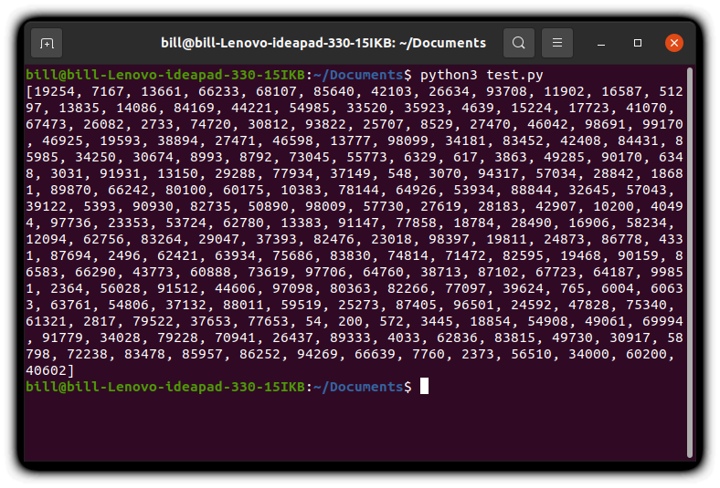
Τυχαίο; Δε νομίζω…#
Η αλήθεια είναι ότι μοιάζει αρκετά τυχαίο με μια πρώτη ματιά. Δηλαδή, κάποιος άσχετος, που αρχίζει να διαβάζει από αυτό εδώ το σημείο, θα πίστευε σχετικά εύκολα ότι αυτοί οι αριθμοί έχουν επιλεγεί στην τύχη.
Ας σχεδιάσουμε τώρα και τις συχνότητες εμφάνισης των διαφόρων αριθμών που μας δίνει η παραπάνω μέθοδος. Για αυτόν τον σκοπό θα χρειαστούμε το εξής script:
import matplotlib.pyplot as plt
def rng(seed, weyl_seed):
return ((seed ** 2 + weyl_seed) % 10 ** 7) // (10 ** 2)
def weyl(seed, a):
return seed + a
if __name__ == '__main__ʹ:
numbers = []
frequencies = [0]*(10**5)
weyl_seed = 0
a = 101
seed = 56231
for i in range(10**8):
weyl_seed = weyl(weyl_seed, a)
seed = rng(seed, weyl_seed)
numbers.append(seed)
frequencies[seed] += 1
plt.plot(frequencies, 'boʹ)
plt.show()
Στην ουσία, δεν κάναμε τίποτα άλλο από το να παραγάγουμε \(10^8\) ψευδοτυχαίους αριθμούς κι έπειτα να μετρήσουμε πόσες φορές βλέπουμε τον καθέναν. Τα αποτελέσματά μας αποτυπώνονται στο παρακάτω σχήμα:
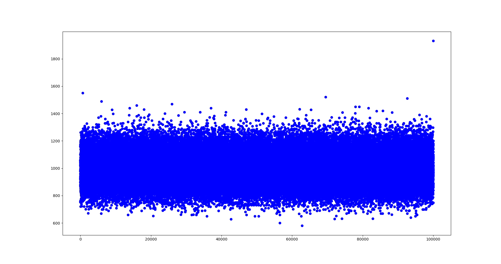
Δεν είναι διόλου κακό!#
Εντάξει, είναι ενθαρρυντικό το πρώτο μας σχήμα, θα ήταν όμως χρήσιμο να κάνουμε ό,τι κάναμε και πριν, ομαδοποιώντας τα δεδομένα μας σε κλάσεις των 100 κι έπειτα να μετρήσουμε τη μέση συχνότητα εμφάνισης των μελών της κλάσης. Γιʹ αυτόν τον σκοπό παραλλάσσουμε λίγο το παραπάνω script, ως εξής:
import matplotlib.pyplot as plt
def rng(seed, weyl_seed):
return ((seed ** 2 + weyl_seed) % 10 ** 7) // (10 ** 2)
def weyl(seed, a):
return seed + a
if __name__ == '__main__ʹ:
numbers = []
frequencies = [0]*(10**3)
weyl_seed = 0
a = 101
seed = 56231
for i in range(10**8):
weyl_seed = weyl(weyl_seed, a)
seed = rng(seed, weyl_seed)
numbers.append(seed)
frequencies[seed//100] += 1
frequencies = [x/100 for x in frequencies]
plt.plot(frequencies, 'boʹ)
plt.show()
Τώρα, τρέχοντας αυτό το script έχουμε - αν τρέξατε το προηγούμενο θα είδατε ότι παίρνει λίγη ώρα, αλλά αξίζει τον κόπο:
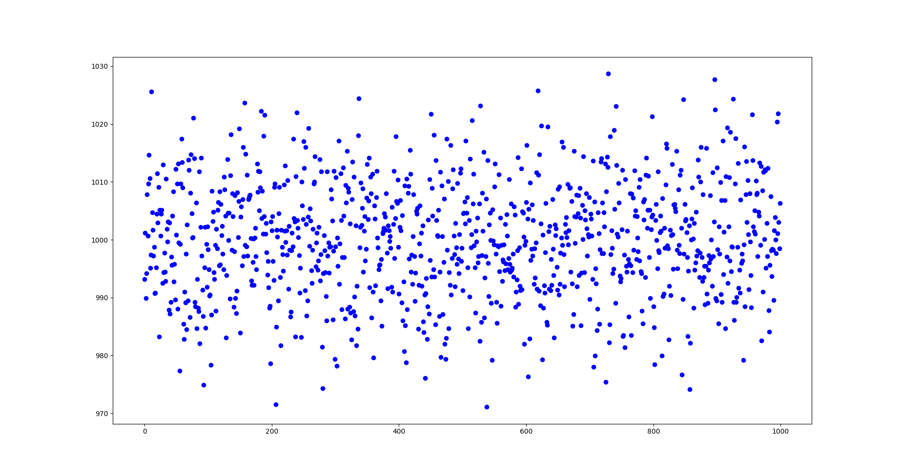
Εξαιρετικό!#
Μη σοκάρεστε, το αποτέλεσμα που έχουμε παραπάνω είναι εξαιρετικό! Παρατηρήστε τον κατακόρυφο άξονα και τις τιμές του. Είναι από 970 μέχρι 1030, που σημαίνει ότι όλες αυτές οι κλάσεις έχουν πολύ κοντινές μέσες συχνότητες εμφάνισης. Άρα, μπορούμε να πούμε ότι πετύχαμε, σε γενικές γραμμές, τον στόχο μας.
Βέβαια, πώς θα μπορούσε κανείς να αποδείξει ότι πράγματι αυτή η ακολουθία έχει την ιδιότητα της ισοκατανομής που θα θέλαμε; Αυτά, στο μέλλον…
Επίλογος#
Ξεκινώντας από πολύ απλές ιδέες - πάρα πολύ απλές, θα λέγαμε - καταφέραμε και κατασκευάσαμε μία πειστική γεννήτρια ψευδοτυχαίων αριθμών. Θα είχε ενδιαφέρον, στο μέλλον, να ασχοληθούμε και με άλλα ζητήματα, όπως:
διαφορετικές μεθόδους να παράγουμε τυχαίους αριθμούς,
κριτήρια που θα θέλαμε να ικανοποιεί μία γεννήτρια ψευδοτυχαίων αριθμών, πέρα από την ιδιότητα της ισοκατανομής.
Ως τότε, καλημέρα!